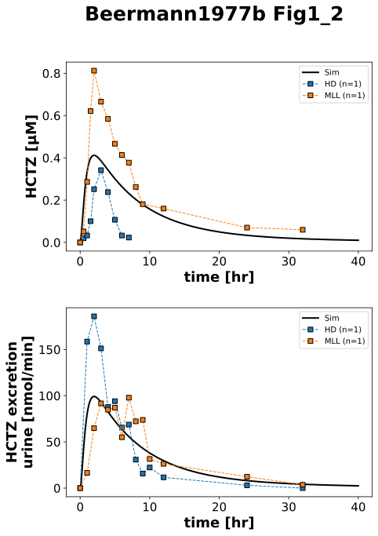
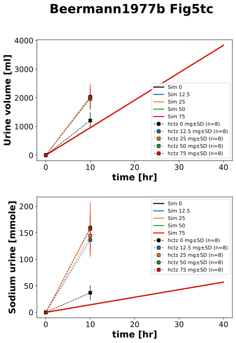

|  |
|  |
../../../../experiments/studies/beermann1977b.py
from typing import Dict
import pandas as pd
from sbmlsim.data import DataSet, load_pkdb_dataframe
from sbmlsim.fit import FitMapping, FitData
from sbmlsim.plot import Axis, Figure
from sbmlsim.simulation import Timecourse, TimecourseSim
from sbmlutils.console import console
from pkdb_models.models.hydrochlorothiazide.experiments.base_experiment import (
HCTZSimulationExperiment,
)
from pkdb_models.models.hydrochlorothiazide.experiments.metadata import (
Health, Tissue, ApplicationForm,
Dosing, Route, Fasting, Coadministration,
HCTZMappingMetaData,
)
from pkdb_models.models.hydrochlorothiazide.helpers import run_experiments
class Beermann1977b(HCTZSimulationExperiment):
"""Simulation experiment of Beermann1977b.
HCTZ in various single oral doses 12.5, 25, 50 and 75 mg.
"""
doses = [0, 12.5, 25, 50, 75]
individuals = ["HD", "MLL"]
yids = [
"[Cve_hctz]", # plasma concentration
"KI__HCTZEX" # excretion rate
]
yid5s = [
"Vurine", # urine volume
"na_urine", # cumulative amount of sodium in urine
]
colors = ["black", "tab:blue", "tab:orange", "tab:green", "red"]
def datasets(self) -> Dict[str, DataSet]:
dsets = {}
for fig_id in ["Fig1_2", "Fig5tc"]:
df: pd.DataFrame = load_pkdb_dataframe(
f"{self.sid}_{fig_id}", data_path=self.data_path
)
for label, df_label in df.groupby("label"):
dset = DataSet.from_df(df_label, self.ureg)
if (
label.startswith("hctz")
or label.startswith("excretion_")
):
dset.unit_conversion("value", 1 / self.Mr.hctz)
dsets[f"{fig_id}_{label}"] = dset
# print(dsets.keys())
# print(dsets)
return dsets
def simulations(self) -> Dict[str, TimecourseSim]:
Q_ = self.Q_
tcsims = {}
for dose in self.doses:
tcsims[f"hctz{dose}"] = TimecourseSim(
Timecourse(
start=0,
end=40 * 60, # [min]
steps=500,
changes={
**self.default_changes(),
"PODOSE_hctz": Q_(dose, "mg"),
},
)
)
return tcsims
def fit_mappings(self) -> Dict[str, FitMapping]:
mappings = {}
# plasma
for kd, individual in enumerate(self.individuals):
mappings[f"fm_Fig1_2_hctz25_{individual}"] = FitMapping(
self,
reference=FitData(
self,
dataset=f"Fig1_2_hctz25_{individual}",
xid="time",
yid="value",
count="count",
),
observable=FitData(self, task=f"task_hctz25", xid="time", yid="[Cve_hctz]"),
metadata=HCTZMappingMetaData(
tissue=Tissue.PLASMA,
application_form=ApplicationForm.TABLET,
route=Route.PO,
dosing=Dosing.SINGLE,
health=Health.HEALTHY,
fasting=Fasting.FASTED,
coadministration=Coadministration.NONE,
),
)
for k, yid5 in enumerate(self.yid5s):
for kd, dose in enumerate(self.doses):
mappings[f"fm_Fig5tc_{str(dose).replace('.', '_')}_urinvol"] = FitMapping(
self,
reference=FitData(
self,
dataset=f"Fig5tc_{str(dose).replace('.', '_')}_urinvol",
xid="time",
yid="mean",
yid_sd="mean_sd",
count="count",
),
observable=FitData(
self, task=f"task_hctz{dose}", xid="time", yid=yid5
),
metadata=HCTZMappingMetaData(
tissue=Tissue.PLASMA,
application_form=ApplicationForm.TABLET,
route=Route.PO,
dosing=Dosing.SINGLE,
health=Health.HEALTHY,
fasting=Fasting.FASTED,
coadministration=Coadministration.NONE,
),
)
return mappings
def figures(self) -> Dict[str, Figure]:
return {
**self.figure_Fig1_2(),
**self.figure_Fig5tc(),
}
def figure_Fig1_2(self) -> Dict[str, Figure]:
name = "Fig1_2"
fig = Figure(
experiment=self,
sid=name,
num_rows=2,
num_cols=1,
name=f"{self.__class__.__name__} {name}",
)
plots = fig.create_plots(xaxis=Axis(self.label_time, unit="hr"), legend=True)
plots[0].set_yaxis(self.label_hctz, unit=self.unit_hctz)
plots[1].set_yaxis(self.label_hctz_excretion_urine, unit=self.unit_hctz_excretion_urine)
# simulation
for k, yid in enumerate(self.yids):
plots[k].add_data(
task=f"task_hctz25",
xid="time",
yid=yid,
label=f"Sim",
color="black",
)
# data
for kd, individual in enumerate(self.individuals):
plots[0].add_data(
dataset=f"Fig1_2_hctz25_{individual}",
xid="time",
yid="value",
yid_sd=None,
count="count",
label=f"{individual}",
color=self.colors[kd+1],
),
plots[1].add_data(
dataset=f"Fig1_2_excretion_hctz25_{individual}",
xid="time",
yid="value",
yid_sd=None,
count="count",
label=f"{individual}",
color=self.colors[kd+1],
)
return {
fig.sid: fig,
}
def figure_Fig5tc(self) -> Dict[str, Figure]:
name = "Fig5tc"
fig = Figure(
experiment=self,
sid=name,
num_rows=2,
num_cols=1,
name=f"{self.__class__.__name__} {name}",
)
plots = fig.create_plots(xaxis=Axis(self.label_time, unit="hr"), legend=True)
plots[0].set_yaxis(label="Urine volume", unit="ml")
plots[1].set_yaxis(label="Sodium urine", unit="mmole")
# simulation
for k, yid5 in enumerate(self.yid5s):
for kd, dose in enumerate(self.doses):
plots[k].add_data(
task=f"task_hctz{dose}",
xid="time",
yid=yid5,
label=f"Sim {dose}",
color=self.colors[kd],
)
# data
for kd, dose in enumerate(self.doses):
plots[0].add_data(
dataset=f"Fig5tc_{str(dose).replace('.', '_')}_urinvol",
xid="time",
yid="mean",
yid_sd="mean_sd",
count="count",
label=f"hctz {dose} mg",
color=self.colors[kd],
),
plots[1].add_data(
dataset=f"Fig5tc_{str(dose).replace('.', '_')}_aurine_na",
xid="time",
yid="mean",
yid_sd="mean_sd",
count="count",
label=f"hctz {dose} mg",
color=self.colors[kd],
)
return {
fig.sid: fig,
}
if __name__ == "__main__":
run_experiments(Beermann1977b, output_dir=Beermann1977b.__name__)
{kind=link}
{kind=link}